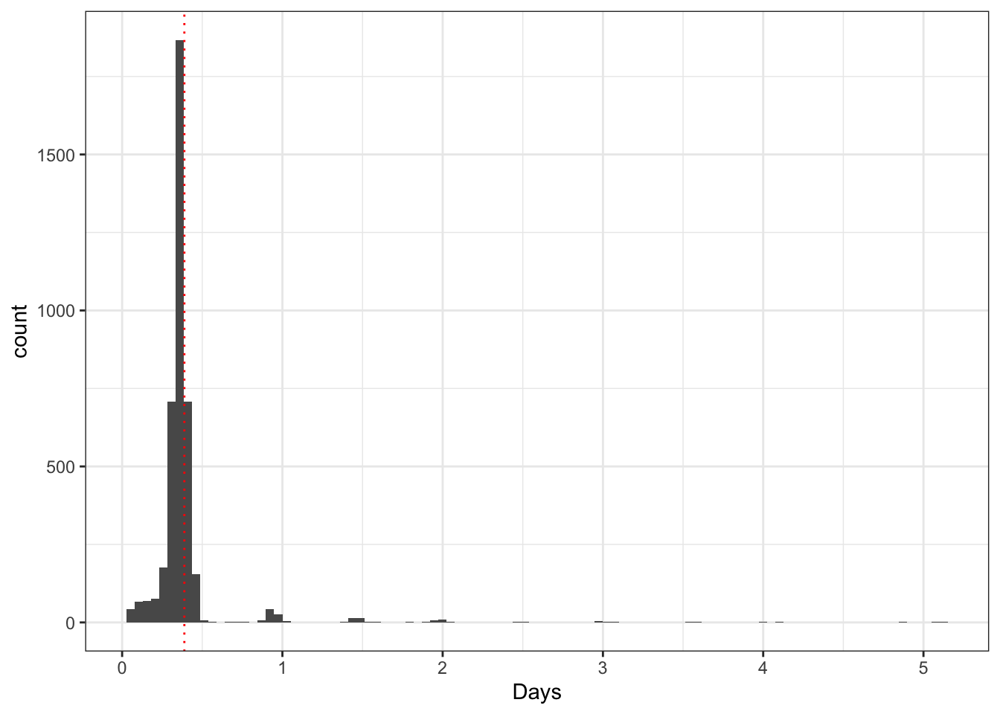
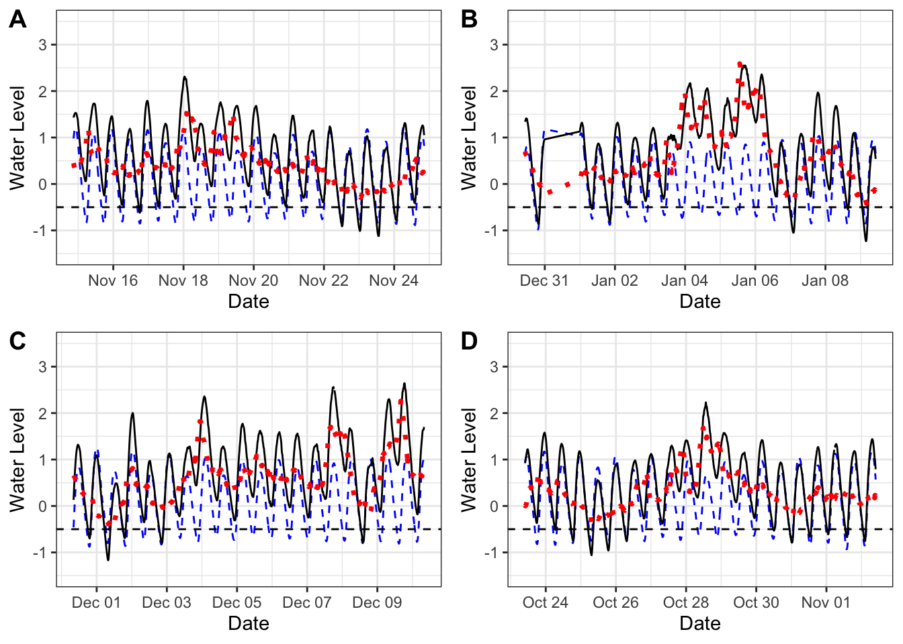
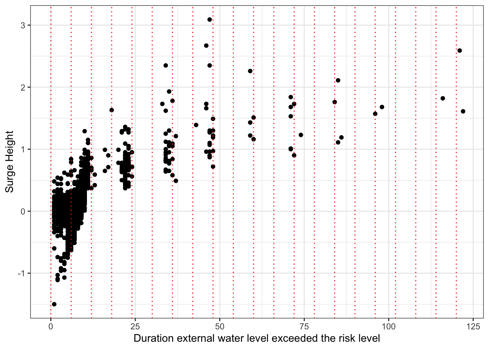

Last updated: 2019-09-25
Checks: 6 1
Knit directory: NWO_Project/
This reproducible R Markdown analysis was created with workflowr (version 1.4.0). The Checks tab describes the reproducibility checks that were applied when the results were created. The Past versions tab lists the development history.
The R Markdown file has unstaged changes. To know which version of the R Markdown file created these results, you’ll want to first commit it to the Git repo. If you’re still working on the analysis, you can ignore this warning. When you’re finished, you can run wflow_publish to commit the R Markdown file and build the HTML.
Great job! The global environment was empty. Objects defined in the global environment can affect the analysis in your R Markdown file in unknown ways. For reproduciblity it’s best to always run the code in an empty environment.
The command set.seed(20190805) was run prior to running the code in the R Markdown file. Setting a seed ensures that any results that rely on randomness, e.g. subsampling or permutations, are reproducible.
Great job! Recording the operating system, R version, and package versions is critical for reproducibility.
Nice! There were no cached chunks for this analysis, so you can be confident that you successfully produced the results during this run.
Great job! Using relative paths to the files within your workflowr project makes it easier to run your code on other machines.
Great! You are using Git for version control. Tracking code development and connecting the code version to the results is critical for reproducibility. The version displayed above was the version of the Git repository at the time these results were generated.
Note that you need to be careful to ensure that all relevant files for the analysis have been committed to Git prior to generating the results (you can use wflow_publish or wflow_git_commit). workflowr only checks the R Markdown file, but you know if there are other scripts or data files that it depends on. Below is the status of the Git repository when the results were generated:
Ignored files:
Ignored: .DS_Store
Ignored: .Rhistory
Ignored: .Rproj.user/
Ignored: code/.DS_Store
Ignored: code/rainHelpers/.DS_Store
Ignored: code/rainHelpers/.Rproj.user/
Ignored: code/tidalHelpers/.DS_Store
Ignored: code/tidalHelpers/.Rhistory
Ignored: code/tidalHelpers/.Rproj.user/
Ignored: code/tidalHelpers/R/.DS_Store
Ignored: code/tidalHelpers/man/
Ignored: data/.DS_Store
Ignored: docs/assets/
Unstaged changes:
Modified: analysis/compound-event-definition.Rmd
Modified: analysis/surge_climatology.Rmd
Note that any generated files, e.g. HTML, png, CSS, etc., are not included in this status report because it is ok for generated content to have uncommitted changes.
These are the previous versions of the R Markdown and HTML files. If you’ve configured a remote Git repository (see ?wflow_git_remote), click on the hyperlinks in the table below to view them.
| File | Version | Author | Date | Message |
|---|---|---|---|---|
| html | e93de5b | katerobsau | 2019-09-25 | Build site. |
| Rmd | 8a01d45 | katerobsau | 2019-09-25 | Updated surge height related to flood risk |
| html | 8a01d45 | katerobsau | 2019-09-25 | Updated surge height related to flood risk |
| html | 5984d7d | katerobsau | 2019-09-23 | Build site. |
| html | 92ea934 | katerobsau | 2019-09-23 | Build site. |
| Rmd | c27e806 | katerobsau | 2019-09-23 | wflow_publish(“*“) |
| html | edc8587 | katerobsau | 2019-08-19 | Build site. |
| Rmd | f7dd2d9 | katerobsau | 2019-08-19 | Code to get clusters written and visualisations made |
| html | de0387f | katerobsau | 2019-08-16 | Build site. |
| html | b5e6a36 | katerobsau | 2019-08-16 | Build site. |
| Rmd | a6ccf41 | katerobsau | 2019-08-16 | added work in progress references |
| html | 825917f | katerobsau | 2019-08-16 | Build site. |
| Rmd | 2117e41 | katerobsau | 2019-08-16 | code/* |
WORK IN PROGRESS
In this section, the available observational data is visualised and the conditions when the sluice is not operational are examined.
The following table displays the observed data at the Harlingen station. The storm surge is obtained by subtracting the harmonic tide from the observed sea level, see Figure NULL 1.
[1] "Check this"[1] "Note: Should add handling of NA Surge values into preprocessing"| Date | Harmonic Tide | Observation | Surge |
|---|---|---|---|
| 2011-01-01 00:00:00 | -0.81 | -0.95 | -0.14 |
| 2011-01-01 00:10:00 | -0.81 | -0.96 | -0.15 |
| 2011-01-01 00:20:00 | -0.79 | -0.95 | -0.16 |
| 2011-01-01 00:30:00 | -0.77 | -0.92 | -0.15 |
| 2011-01-01 00:40:00 | -0.73 | -0.87 | -0.14 |
| 2011-01-01 00:50:00 | -0.68 | -0.80 | -0.12 |
Plot showing the sea level (solid black), harmonic tide (blue dashed) and strom surge (red dotted) observations Example
Summary of Harlingen observational data:
For a sluice height of -0.42 m based on the historical observation, the histogram shows the number of times and for how long the sluices was not operational.
[1] "Need to specify a minimum interarrival time for discharge water"[1] "Need to check how rle() handles missing data"| time | date_start | date_end |
|---|---|---|
| 116H 40M 0S | 2011-12-02 21:50:00 | 2011-12-07 18:20:00 |
| 110H 0M 0S | 2012-01-02 09:20:00 | 2012-01-06 23:10:00 |
| 98H 40M 0S | 2013-10-26 08:30:00 | 2013-10-30 11:00:00 |
| 96H 20M 0S | 2018-12-07 04:20:00 | 2018-12-11 04:30:00 |
| 86H 0M 0S | 2015-11-17 07:20:00 | 2015-11-20 21:10:00 |
| 85H 0M 0S | 2015-01-10 06:30:00 | 2015-01-13 19:20:00 |

There are 4138 times that the sluice is not operational, and the average period that the sluice is not in operational is 9H 4M 0S. This is intuitive given the average period spent in the high tide cycle. Currently we do not condition on the minimum period the sluice can be operated.
The four longest periods when the sluice was not operational are shown in the below figure. We observe in Figure B there is a problem with the underlying data.
[1] "Note: Wrap repition of plots in a function"
The four highest surges are shown in the below Figure. There is not a one-to-one correspondance with the highest surge events and the longest events that pose flood risk.
Warning: Removed 1151 rows containing missing values (geom_point).
As the period that the external water level exceeds -0.42 m increases, there is not a strong correlation with an increase in the surge height. This suggests that the important factor for flood mitigation in the instance of the sluice operation, is not infact surge height, but the time period spent above the risk threshold. This is in contrast to the many frameworks who consider the problem of compound events from the perspective of heavy rainfall and high surge combination.
We note that the duration is a continuous random variable, but that due to the underlying influence of the tidal cycle, that the duration values appear binned. This is because the risk period above the threshold often corresponds with the rising tide and the end of the risk period with the outgoing tide. The difference between these cycles is roughly a factor of 6 hours.
sessionInfo()R version 3.5.2 (2018-12-20)
Platform: x86_64-apple-darwin15.6.0 (64-bit)
Running under: macOS Mojave 10.14.5
Matrix products: default
BLAS: /Library/Frameworks/R.framework/Versions/3.5/Resources/lib/libRblas.0.dylib
LAPACK: /Library/Frameworks/R.framework/Versions/3.5/Resources/lib/libRlapack.dylib
locale:
[1] en_US.UTF-8/en_US.UTF-8/en_US.UTF-8/C/en_US.UTF-8/en_US.UTF-8
attached base packages:
[1] stats graphics grDevices utils datasets methods base
other attached packages:
[1] tidalHelpers_0.1.0 cowplot_1.0.0 forcats_0.4.0
[4] stringr_1.4.0 dplyr_0.8.3 purrr_0.3.2
[7] readr_1.3.1 tidyr_1.0.0 tibble_2.1.3
[10] ggplot2_3.2.1 tidyverse_1.2.1
loaded via a namespace (and not attached):
[1] tidyselect_0.2.5 xfun_0.9 haven_2.1.1 lattice_0.20-38
[5] colorspace_1.4-1 vctrs_0.2.0 generics_0.0.2 htmltools_0.3.6
[9] yaml_2.2.0 rlang_0.4.0 pillar_1.4.2 glue_1.3.1
[13] withr_2.1.2 modelr_0.1.5 readxl_1.3.1 lifecycle_0.1.0
[17] munsell_0.5.0 gtable_0.3.0 workflowr_1.4.0 cellranger_1.1.0
[21] rvest_0.3.4 evaluate_0.14 labeling_0.3 knitr_1.24
[25] highr_0.8 broom_0.5.2 Rcpp_1.0.2 scales_1.0.0
[29] backports_1.1.4 jsonlite_1.6 fs_1.3.1 hms_0.5.1
[33] digest_0.6.20 stringi_1.4.3 grid_3.5.2 rprojroot_1.3-2
[37] cli_1.1.0 tools_3.5.2 magrittr_1.5 lazyeval_0.2.2
[41] crayon_1.3.4 whisker_0.4 pkgconfig_2.0.2 zeallot_0.1.0
[45] xml2_1.2.2 lubridate_1.7.4 assertthat_0.2.1 rmarkdown_1.15
[49] httr_1.4.1 rstudioapi_0.10 R6_2.4.0 nlme_3.1-141
[53] git2r_0.26.1 compiler_3.5.2